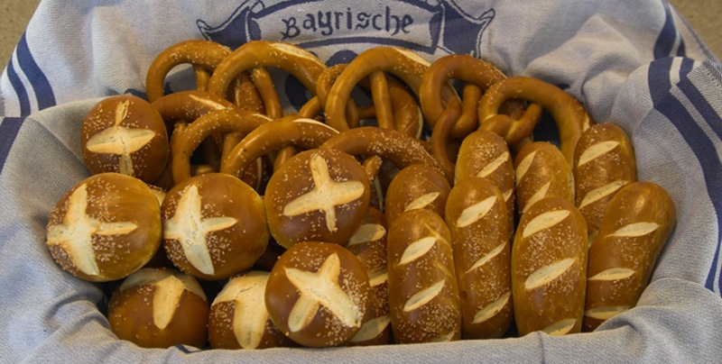
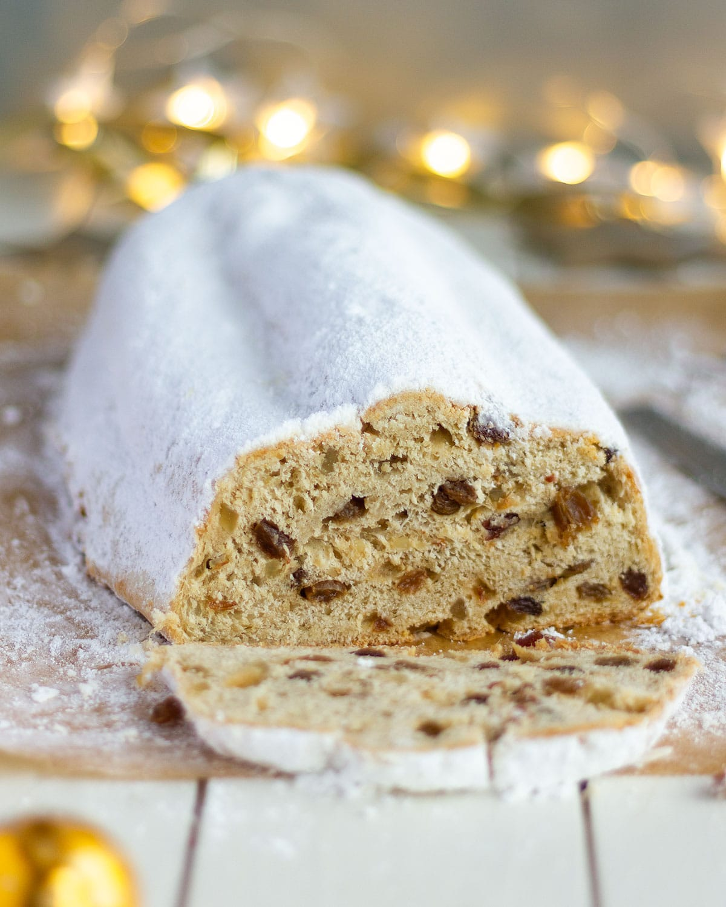

Recetas Tradicionales Alemanas

Bretzel Casero
Ingredientes
- 500g harina de trigo
- 7g levadura seca
- 300ml agua tibia
- 1 cucharada de sal
- 2 cucharadas de mantequilla
- Bicarbonato de sodio para el baño
- Sal gruesa para decorar
Preparación
- Mezclar harina, levadura y agua
- Amasar por 10 minutos
- Dejar reposar 1 hora
- Formar los bretzels
- Sumergir en solución de bicarbonato
- Hornear a 200°C por 20-25 minutos

Stollen Navideño
Ingredientes
- 500g harina de trigo
- 100g azúcar
- 250g mantequilla
- 200g frutas confitadas
- 100g almendras molidas
- Especias navideñas
- Azúcar glas para decorar
Preparación
- Mezclar ingredientes secos
- Incorporar mantequilla y frutas
- Amasar y formar
- Hornear a 180°C por 45 minutos
- Cubrir con mantequilla derretida
- Espolvorear con azúcar glas